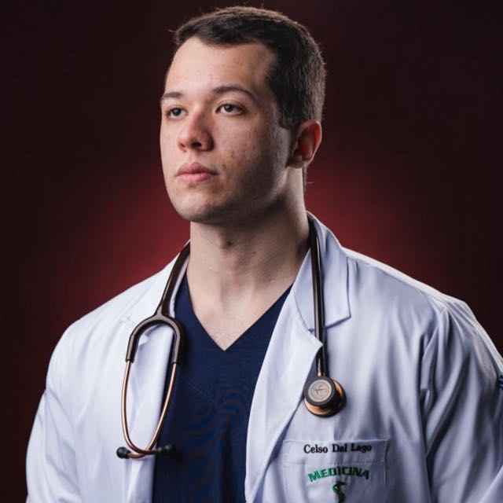

Celso Dal Lago é médico formado com um compromisso simples: cuidar de cada pessoa com atenção, estudo constante e a certeza de que a medicina é, antes de tudo, um ato de amor.

Formado em Medicina pela UNIDERP, em Campo Grande (MS), Celso construiu sua trajetória acadêmica em torno de um princípio simples: entender o paciente por inteiro antes de tratar apenas o sintoma. Essa forma de olhar é o que hoje o aproxima da Radiologia — a especialidade que transforma imagens em respostas.
Atualmente em formação para se tornar radiologista, dedica seus estudos à leitura fina de exames de imagem: raio-X, tomografia, ressonância e ultrassonografia. É um trabalho de precisão que exige paciência, método e, sobretudo, cuidado — os mesmos valores que o trouxeram até a medicina.
Mais do que uma profissão, a medicina é, para Celso, uma vocação: a certeza de que cada exame analisado e cada laudo escrito representam uma pessoa do outro lado, esperando por clareza.
Formação médica completa, com base sólida em clínica geral e no raciocínio diagnóstico que hoje orienta seus estudos em imagem.
Aprofundamento contínuo na interpretação de exames radiológicos, com foco em precisão técnica e atenção ao contexto clínico de cada paciente.
O objetivo de se tornar radiologista segue como um compromisso diário — cada imagem estudada é um passo a mais nessa direção.
Primeira janela para o corpo — essencial para triagem rápida de ossos, tórax e articulações.
Cortes detalhados que revelam estruturas internas com profundidade e precisão milimétrica.
Contraste de tecidos moles para diagnósticos finos em neurologia, ortopedia e além.
Acompanhamento em tempo real, seguro e acessível — do pré-natal ao abdome.
“Escolhi a medicina por amor — e escolho a radiologia porque, às vezes, cuidar de alguém começa por enxergar o que os olhos, sozinhos, não alcançam.” Celso Dal Lago
Dúvidas, indicações ou apenas uma troca sobre radiologia — a conversa é sempre bem-vinda.